| get_spinner {cli} | R Documentation |
cli contains many different spinners, you choose one according to your
taste.
get_spinner(which = NULL)
which |
The name of the chosen spinner. If |
options(cli.spinner = "hearts")
fun <- function() {
cli_progress_bar("Spinning")
for (i in 1:100) {
Sys.sleep(4/100)
cli_progress_update()
}
}
fun()
options(cli.spinner = NULL)

A list with entries: name, interval: the suggested update
interval in milliseconds and frames: the character vector of the
spinner's frames.
Other spinners:
demo_spinners(),
list_spinners(),
make_spinner()